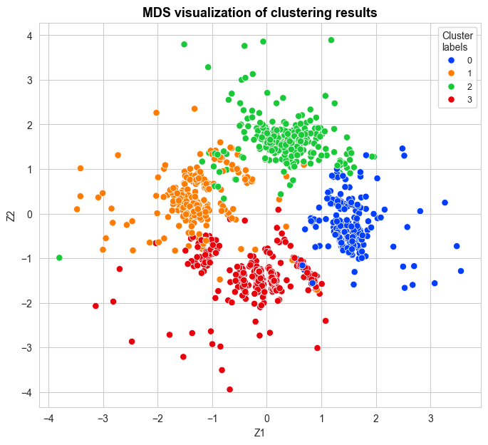
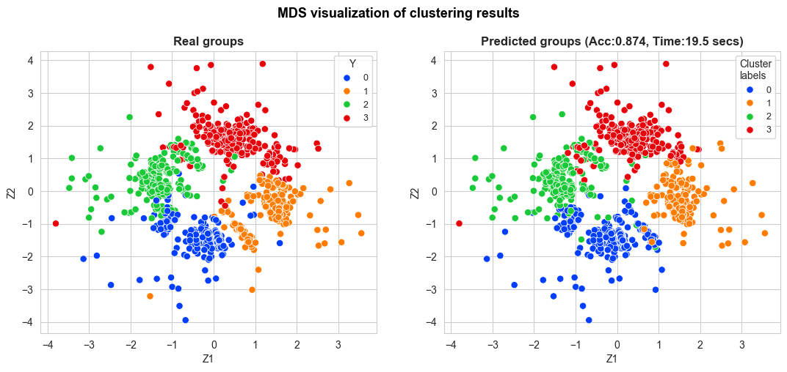
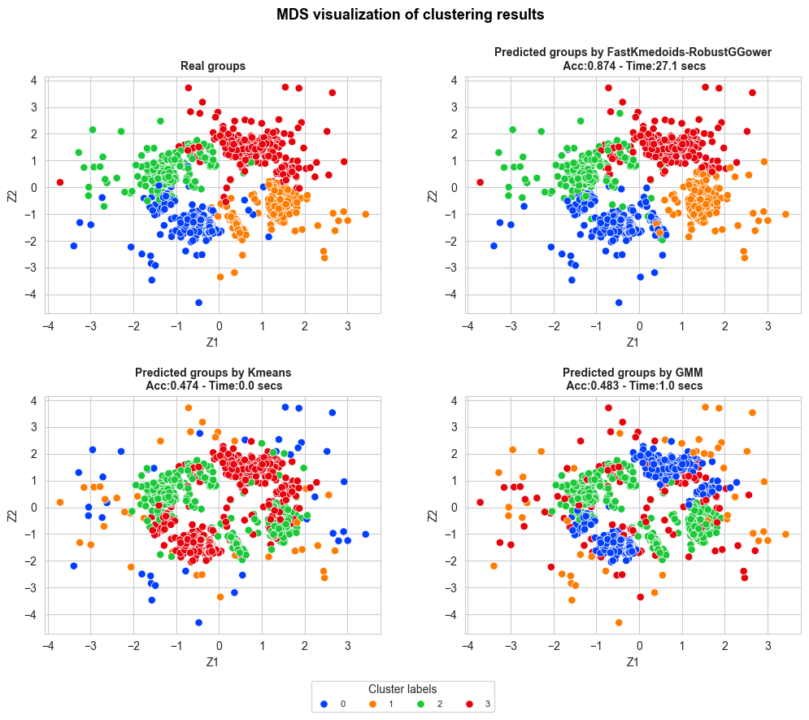
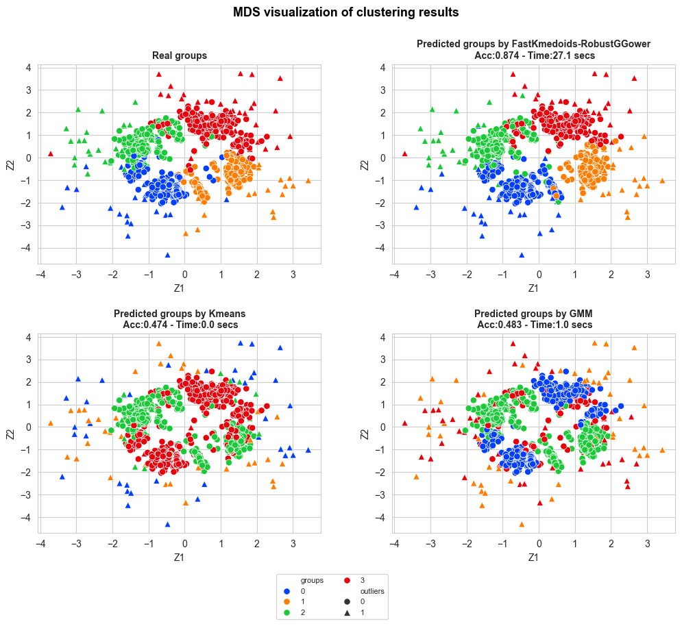

plots#
clustering_MDS_plot_one_method#
Computes and display the MDS plot for a considered clustering configuration,
differentiating the cluster labels and the real groups, if they are known.
Parameters (inputs)
----------
X_mds: a numpy array with the MDS matrix for the distance matrix used in the considered clustering configuration.
y_pred: a numpy array with the predictions of the response.
y_true: a numpy array with the true values of the response.
title: the title of the plot.
accuracy: the accuracy of the clustering algorithm, if computed.
time: the execution time of the clustering algorithm, if computed.
figsize: the size of the plot.
bbox_to_anchor: the size of the legend box.
title_fontsize: the size of the font of the title.
title_weight: the weight of the title.
points_size: the size of the points of the plot.
title_height: the height of the tile of the plot.
Returns (outputs)
-------
The described plot.
Example#
import pandas as pd
import polars as pl
import numpy as np
from sklearn.datasets import make_blobs
from db_robust_clust .data import outlier_contamination
from db_robust_clust .models import FastKmedoidsGGower
from db_robust_clust .metrics import adjusted_accuracy
from PyDistances.mixed import FastGGowerDistMatrix
from sklearn.manifold import MDS
import seaborn as sns
sns.set_style('whitegrid')
from sklearn.mixture import GaussianMixture
from sklearn.cluster import KMeans
X, Y = make_blobs(n_samples=35000, centers=4, cluster_std=[2,2,2,3], n_features=8, random_state=123)
X = pd.DataFrame(X)
X.columns = [f"X{i}" for i in range(1, X.shape[1]+1)]
# Se convierten dos variables cuantitativas a binarias, y otras dos a multiclase, discretizandolas.
X['X5'] = pd.cut(X['X5'], bins=[X['X5'].min()-1, X['X5'].mean(), X['X5'].max()+1], labels=False)
X['X6'] = pd.cut(X['X6'], bins=[X['X6'].min()-1, X['X6'].mean(), X['X6'].max()+1], labels=False)
X['X7'] = pd.cut(X['X7'], bins=[X['X7'].min()-1, X['X7'].quantile(0.25), X['X7'].quantile(0.50), X['X7'].quantile(0.75), X['X7'].max()+1], labels=False)
X['X8'] = pd.cut(X['X8'], bins=[X['X8'].min()-1, X['X8'].quantile(0.25), X['X8'].quantile(0.50), X['X8'].quantile(0.75), X['X8'].max()+1], labels=False)
X_outliers, outliers_idx_X1 = outlier_contamination(X, col_name='X1', prop_above=0.1, sigma=3, random_state=123)
X_outliers, outliers_idx_X2 = outlier_contamination(X_outliers, col_name='X2', prop_below=0.1, sigma=5, random_state=123)
X = X_outliers.copy()
mds = MDS(n_components=2, dissimilarity='precomputed', random_state=111)
fastGGower = FastGGowerDistMatrix(frac_sample_size=0.03, random_state=111, p1=4, p2=2, p3=2,
d1='robust_mahalanobis', d2='sokal', d3='hamming',
robust_method='trimmed', alpha=0.08)
fastGGower.compute(X)
X_mds = mds.fit_transform(fastGGower.D_GGower)
start_time = time.time()
fast_kmedoids = FastKmedoidsGGower(n_clusters=4, method='pam', init='heuristic', max_iter=100, random_state=111,
frac_sample_size=0.01, p1=4, p2=2, p3=2,
d1='robust_mahalanobis', d2='jaccard', d3='hamming',
robust_method='trimmed', alpha=0.05, epsilon=0.05, n_iters=20)
fast_kmedoids.fit(X)
cluster_labels_fast_kmedoids = fast_kmedoids.labels_
time_fast_kmedoids = time.time() - start_time
from db_robust_clust .plots import clustering_MDS_plot_one_method
clustering_MDS_plot_one_method(X_mds=X_mds, y_pred=cluster_labels_fast_kmedoids[fastGGower.sample_index],
y_true=None, title="MDS visualization of clustering results",
accuracy=None, time=None,
figsize=(8,7), bbox_to_anchor=(1,1),
title_size=13, title_weight='bold',
points_size=45, title_height=1,
save=False, legend_size=9)

adj_accuracy_fast_kmedoids, adj_cluster_labels_fast_kmedoids = adjusted_accuracy(y_pred=cluster_labels_fast_kmedoids, y_true=Y)
clustering_MDS_plot_one_method(X_mds=X_mds,
y_pred=adj_cluster_labels_fast_kmedoids[fastGGower.sample_index],
y_true=Y[fastGGower.sample_index],
title="MDS visualization of clustering results",
accuracy=adj_accuracy_fast_kmedoids,
time=time_fast_kmedoids,
figsize=(13,5), bbox_to_anchor=(1,1),
title_size=13, title_weight='bold',
points_size=45, title_height=1,
save=False, legend_size=9, wspace=0.2)

clustering_MDS_plot_multiple_methods#
Computes and display the MDS plot for a considered clustering configuration,
differentiating the cluster labels and the real groups, if they are known.
Parameters (inputs)
----------
X_mds: a numpy array with the MDS matrix for the distance matrix used in the considered clustering configuration.
y_pred: a numpy array with the predictions of the response.
y_true: a numpy array with the true values of the response.
title: the title of the plot.
accuracy: the accuracy of the clustering algorithm, if computed.
time: the execution time of the clustering algorithm, if computed.
figsize: the size of the plot.
bbox_to_anchor: the size of the legend box.
title_fontsize: the size of the font of the title.
title_weight: the weight of the title.
points_size: the size of the points of the plot.
title_height: the height of the tile of the plot.
Returns (outputs)
-------
The described plot.
Example#
start_time = time.time()
kmeans = KMeans(n_clusters=4, random_state=123, init='k-means++', n_init='auto', max_iter=300)
kmeans.fit(X)
cluster_labels_kmeans = kmeans.labels_
time_kmeans = time.time() - start_time
start_time = time.time()
gmm = GaussianMixture(n_components=4, random_state=123)
gmm.fit(X)
cluster_labels_gmm = gmm.predict(X)
time_gmm = time.time() - start_time
adj_accuracy_kmeans, adj_cluster_labels_kmeans = adjusted_accuracy(y_pred=cluster_labels_kmeans, y_true=Y)
adj_accuracy_gmm, adj_cluster_labels_gmm = adjusted_accuracy(y_pred=cluster_labels_gmm, y_true=Y)
y_pred_dict = {'db_robust_clust-RobustGGower': adj_cluster_labels_fast_kmedoids[fastGGower.sample_index],
'Kmeans': adj_cluster_labels_kmeans[fastGGower.sample_index],
'GMM': adj_cluster_labels_gmm[fastGGower.sample_index]}
accuracy_dict = {'db_robust_clust-RobustGGower': adj_accuracy_fast_kmedoids,
'Kmeans': adj_accuracy_kmeans,
'GMM': adj_accuracy_gmm}
time_dict = {'db_robust_clust-RobustGGower': time_fast_kmedoids,
'Kmeans': time_kmeans,
'GMM': time_gmm}
from db_robust_clust .plots import clustering_MDS_plot_multiple_methods
clustering_MDS_plot_multiple_methods(X_mds=X_mds, y_pred=y_pred_dict,
y_true=Y[fastGGower.sample_index],
title="MDS visualization of clustering results",
accuracy=accuracy_dict, time=time_dict, n_rows=3,
figsize=(12,12), bbox_to_anchor=(0.1,-1.9),
title_size=13, subtitles_size=10,
title_weight='bold', points_size=45,
title_height=0.95, legend_size=8,
wspace=0.25, hspace=0.45,
legend_title='Cluster Labels',
n_cols_legend=4, save=False)

if np.array_equal(outliers_idx_X1, outliers_idx_X2):
print('equal')
outlier_idx = outliers_idx_X1.copy()
else:
print('not equal')
outlier_idx = np.unique(np.concatenate((outliers_idx_X1, outliers_idx_X2)))
outliers_boolean = np.array([0 if x not in outlier_idx else 1 for x in range(0, len(X))])
clustering_MDS_plot_multiple_methods(X_mds=X_mds, y_pred=y_pred,
y_true=Y[fastGGower.sample_index],
title="MDS visualization of clustering results",
accuracy=accuracy, time=time_, n_rows=3,
figsize=(12,12), bbox_to_anchor=(0,-2),
title_size=13, title_weight='bold',
subtitles_size=10,
points_size=45, title_height=0.95,
save=False, legend_size=8,
wspace=0.25, hspace=0.45,
outliers_boolean=outliers_boolean[fastGGower.sample_index],
n_cols_legend=2, legend_title='')
